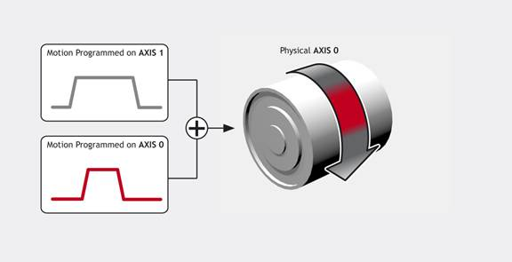
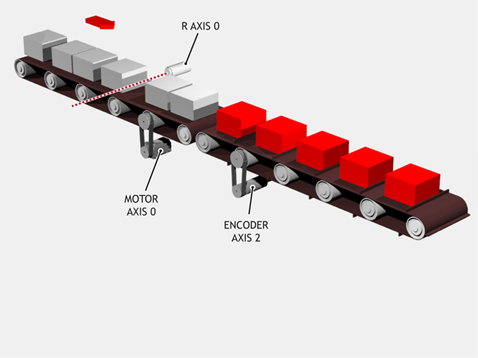
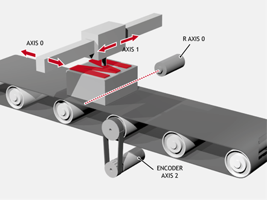

Axis Command
ADDAX(axis)
The ADDAX command is used to superimpose two or more movements to build up a more complex movement profile.
The ADDAX command takes the demand position changes from the specified axis and adds them to any movements running on the base axis.
After the ADDAX command has been issued the link between the two axes remains until broken and any further moves on the specified axis will be added to the base axis.
The specified axis can be any axis and does not have to physically exist in the system.
The ADDAX command therefore allows an axis to perform the moves specified on two axes added together.
When using an encoder with SERVO = OFF the MPOS is copied into the DPOS . This allows ADDAX to be used to sum encoder inputs.
Since ADDAX results in motion that is a function of motion from itself and one or more other axes, when a software or hardware limit is triggered there is a choice of behaviours regarding how the master axis or axes are handled. The default is to effectively ignore the limit, but if the limit should be adhered to, then this can be achieved by setting bit 17 of AXIS_MODE, which will cause all master axes to be cancelled.
|
axis: |
Axis to superimpose.
|
The ADDAX command sums the movements in encoder edge units.
Using ADDAX on axis with different UNITS , axis 0 will move 1 * 1000 + 2 * 20 = 1040 edges.

UNITS AXIS(0) = 1000
UNITS AXIS(1) = 20
'Superimpose axis 1 on axis 0
ADDAX(1) AXIS(0)
MOVE(1) AXIS(0)
MOVE(2) AXIS(1)
Pieces are placed randomly onto a continuously moving belt and further along the line are transferred to a second flighted belt. A detection system gives an indication as to whether a piece is in front of or behind its nominal position, and how far.

expected = 2000 'Sets expected position
BASE(0)
ADDAX(1)
CONNECT(1, 2) 'Continuous geared connection to flighted belt
REPEAT
GOSUB getoffset 'Get offset to apply
MOVE(offset) AXIS(1) 'Make correcting move on virtual axis
UNTIL IN(2) = OFF 'Repeat until stop signal on input 2
RAPIDSTOP
ADDAX(-1) 'Clear ADDAX connection
STOP
Getoffset: 'Subroutine to register the position of the
'piece and calculate the offset
BASE(0)
REGIST(3)
WAIT UNTIL MARK
seenat = REG_POS
offset = expected - seenat
RETURN
Axis 0 in this example is connected to the second conveyor’s encoder and a superimposed MOVE on axis 1 is used to apply offsets.
An XY marking machine must mark boxes as they move along a conveyor. Using CONNECT enables the X marking axis to follow the conveyor. A virtual axis is used to program the marking absolute positions; this is then superimposed onto the X axis using ADDAX.

ATYPE AXIS(3) = 0 'Set axis 3 as virtual axis
SERVO AXIS(3) = ON
DEFPOS(0) AXIS(3)
ADDAX(3) AXIS(0) 'Connect axis 3 requirement to axis 0
WHILE IN(2) = ON
REGIST(3) 'Registration input detects a box on the conveyor
WAIT UNTIL MARK OR IN(2) = OFF
IF MARK THEN
CONNECT(1, 2) AXIS(0) 'Connect axis 0 to the moving belt
BASE(3, 1) 'Set the drawing motion to axis 3 and 1
'Draw the M
MOVEABS(1200, 0) 'Move A > B
MOVEABS(600, 1500) 'Move B > C
MOVEABS(1200, 3000) 'Move C > D
MOVEABS(0, 0) 'Move D > E
WAIT IDLE
BASE(0)
CANCEL 'Stop axis 0 from following the belt
WAIT IDLE
MOVEABS(0) 'Move axis 0 to home position
ENDIF
WEND
CANCEL